L'Homme-Molécule (Owen Reece) (Terre-616)
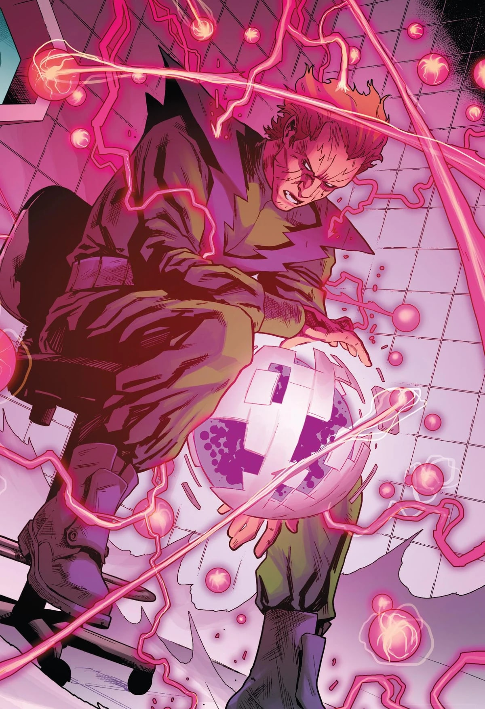
Origines :
Owen Reece est né au Colorado, mais sa famille déménagea rapidement à New-York.
C'était un enfant fragile, qui sera élevé par sa mère, qui était très protectrice, ce qu'Owen détestait.
Au lycée, il n'avait aucun ami, et voulut devenir magicien.
Après ses études, il travailla pour ACME Atomics Corporation pendant plus de douze ans.
Simple employé, il espérait être reconnu par ses collègues de laboratoire.
Un jour, en tentant de réparer une machine, un accident se produisit et il fut bombardé de radiations.
Son visage fut mutilé.
En réalité, cet accident avait été provoqué par les Beyonders, des êtres existants en dehors du Multivers.
Ils créèrent cet accident en tant que singularité dans chaque univers, et transformèrent Owen en une sorte de bombe qui détruirait son univers s'il venait à mourir.
Leur but était de voir ce qu'il se passerait lorsqu'ils tueraient tous les Owen Reece.
Après ça, Owen découvrit qu'il pouvait contrôler la structure moléculaire des choses.
Lorsqu'il fut licencié pour l'accident, il décida de conquérir le monde. Il se surnomma l'Homme-Molécule et s'attaqua à New-York.
A cause de ses problèmes psychologiques, il plaça inconsciemment une limite à ses pouvoirs, comme par exemple ne pas pouvoir affecter les êtres vivants.
Uatu le Gardien ressentit la menace et contacta les Quatre Fantastiques, qu'il téléporta à Times Square.
Mr. Fantastique réussit à déduire les limites de Reece, et les héros piégèrent le vilain.
Puis, Uatu enferma Reece dans une autre dimension afin de protéger la Terre.
 - page 280.jpg)
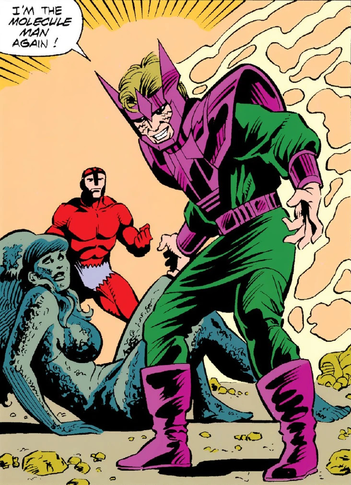
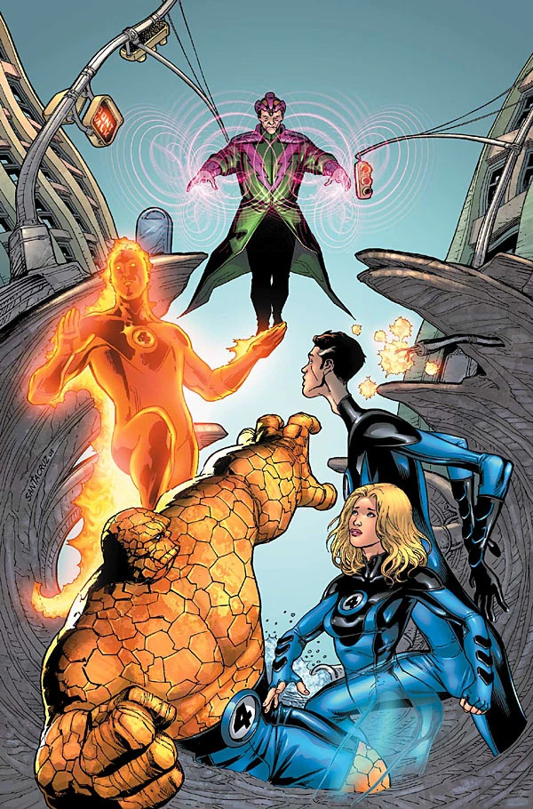
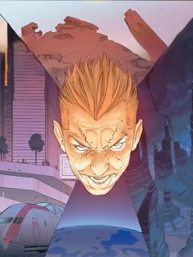
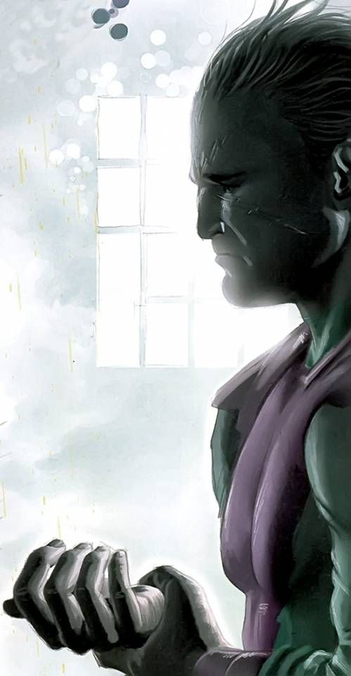
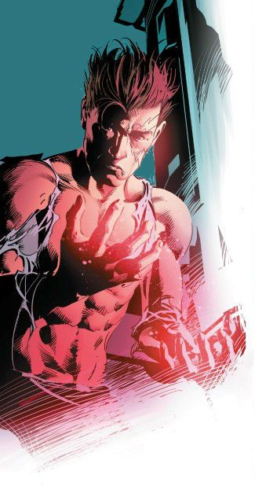
Capacités :
Depuis son irradiation Owen peut manipuler mentalement toute forme de matière à un niveau subatomique, pouvant même la convertir en énergie et vice-versa.
Grâce à ses pouvoirs, il peut dissimuler les cicatrices laissées sur son visage par l'accident qui lui a donné ses pouvoirs.
Il est également capable de créer des champs de force, des faisceaux d'énergie et des portails vers l'hyperespace, lui permettant de voyager plus vite que la lumière.

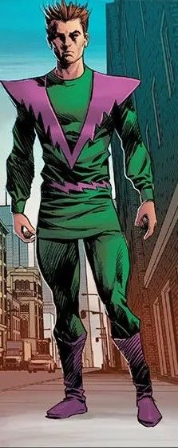
Costume :
L'Homme-Molécule est généralement représenté comme un homme mince, au visage pâle et fatigué.
Ses cheveux bruns sont souvent coiffés en arrière, et son regard traduit souvent la paranoïa, la peur ou la folie latente liée à l'immensité de ses pouvoirs.
Son costume iconique est composé d'une combinaison verte avec un col violet, ainsi que des gants et des bottes violettes.
Son visage est couvert de cicatrices en formes d'éclairs, qu'il arrive à dissimuler grâce à ses pouvoirs
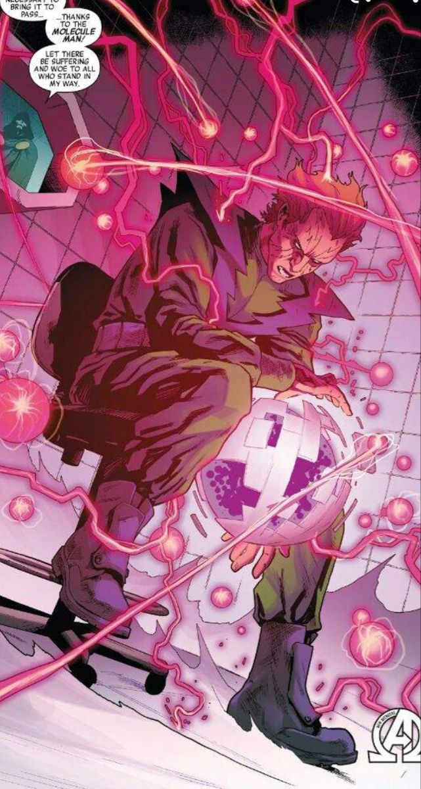
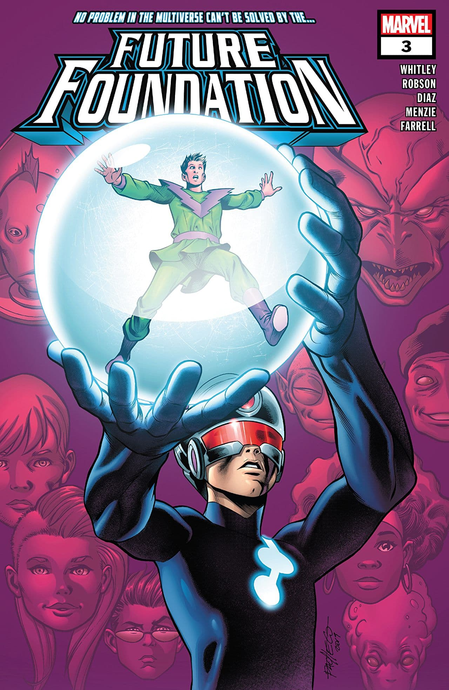
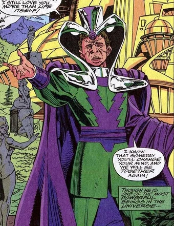
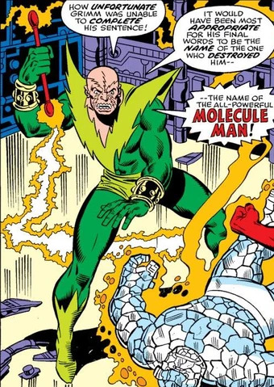
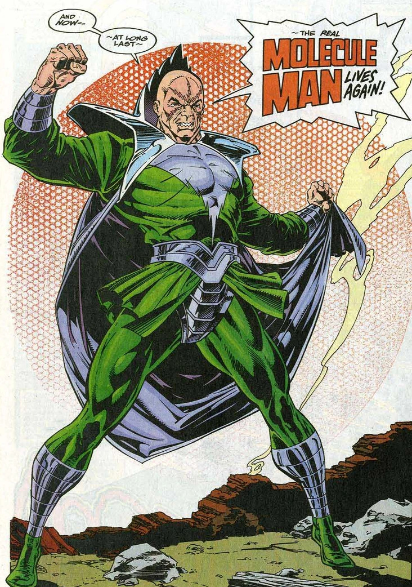
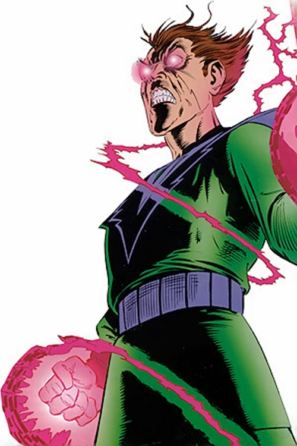
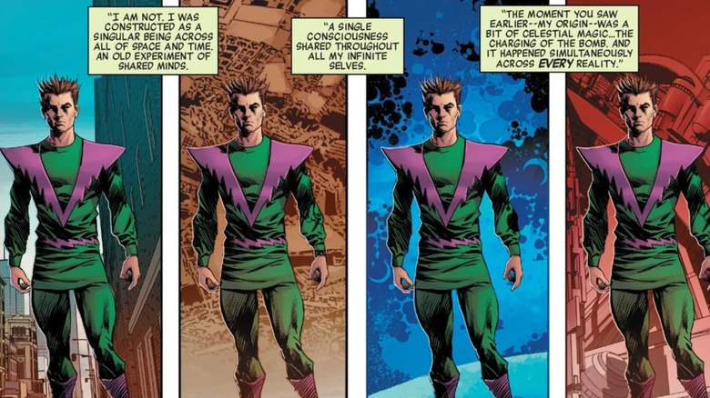
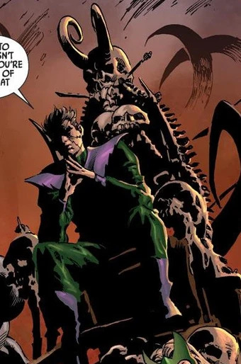
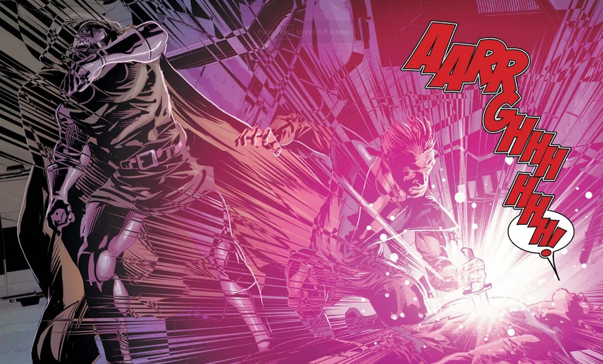
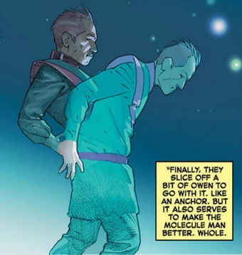
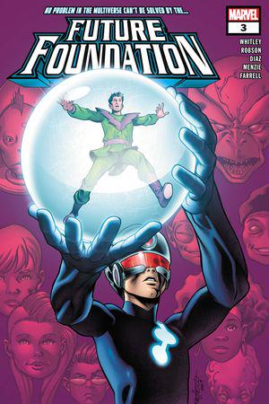
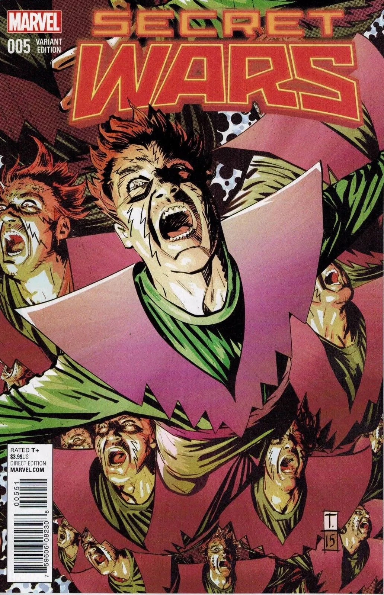